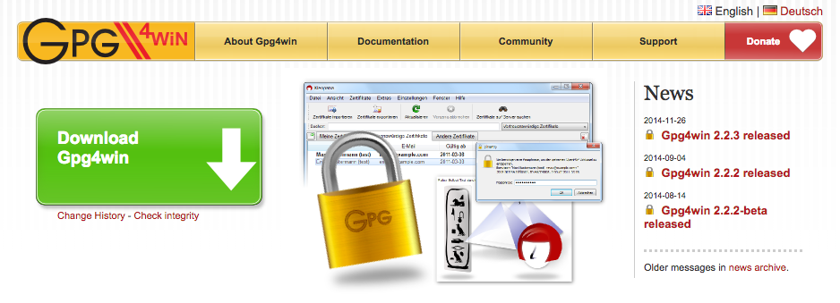
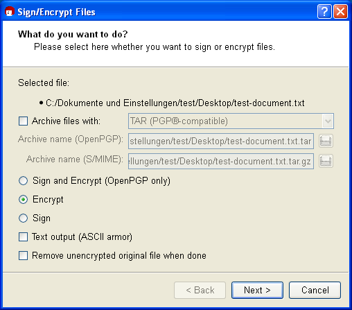
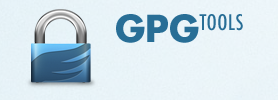
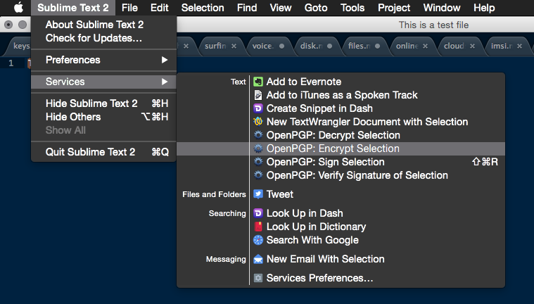

File Encryption
GPG4Win (Windows)
Gpg4win enables users to securely transport emails and files with the help of encryption and digital signatures. Encryption protects the contents against an unwanted party reading it. Digital signatures make sure that it was not modified and comes from a specific sender.
Gpg4win supports both relevant cryptography standards, OpenPGP and S/MIME (X.509), and is the official GnuPG distribution for Windows. It is maintained by the developers of GnuPG. Gpg4win and the software included with Gpg4win are Free Software (Open Source; among other things free of charge for all commercial and non-commercial purposes).

Screenshots

Above: Main window - File Encryption
Download
Available on the official website
Price: Free
More Information
Find a full feature list here A so called GPG4Win Compendium explains all integrated tools.
GPGTools (Mac OS X)
Use GPG Suite to encrypt, decrypt, sign and verify files or messages. Manage your GPG Keychain with a few simple clicks and experience the full power of GPG easier than ever before.
It is tested on OS X 10.10 Yosemite and compatible back to OS X 10.6.
- GPG for Mail is an open source plugin for Apple Mail. Encrypt, decrypt, sign and verify mails using OpenPGP with a few simple clicks.
- GPG Keychain is an open source application for Mac OS X. It allows you to manage your OpenPGP keys. Create and modify your keys and import the keys of your friends from a key server.
- GPG Services is a plugin that brings GPG power to almost any application. It allows you to encrypt/decrypt, sign/verify and import keys from text selections, files, folders and much more.
- MacGPG is the underlying power engine of our GPG Suite. If you're familiar with the command line use the raw power of it.

Screenshots

Above: Access via Services
Download
Download the GPGTools for Mac OS X here
More Information
Find more information here
7-Zip
7-Zip is a file archiver with a high compression ratio. The important feature is that 7-Zip allows to encrypt an archive and included file names using AES-256.
7-Zip is open source software. Most of the source code is under the GNU LGPL license. The unRAR code is under a mixed license: GNU LGPL + unRAR restrictions. Check license information here: 7-Zip license. You can use 7-Zip on any computer, including a computer in a commercial organization. You don't need to register or pay for 7-Zip.
The main features of 7-Zip:
- High compression ratio in 7z format with LZMA and LZMA2 compression
- Supported formats: Packing / unpacking: 7z, XZ, BZIP2, GZIP, TAR, ZIP and WIM Unpacking only: ARJ, CAB, CHM, CPIO, CramFS, DEB, DMG, FAT, HFS, ISO, LZH, LZMA, MBR, MSI, NSIS, NTFS, RAR, RPM, SquashFS, UDF, VHD, WIM, XAR and Z.
- Strong AES-256 encryption in 7z and ZIP formats
- Self-extracting capability for 7z format
- Integration with Windows Shell
- Powerful File Manager
- Powerful command line version
- Plugin for FAR Manager
- Localizations for 87 languages
Recommended Options for New Volumes
When creating a new archive options allow to set a password and encryption method. Choose AES-256 and set a strong password with at least 12 characters based on lower and uppercase characters, numbers and symbols. You can choose this service if the scheme you want to use for your password is a secure one.

Above: Encryption options for new archives
Screenshots

Above: Main window
Download
Available on the official website
Price: Free
More Information
For more information visit 7-zip.org